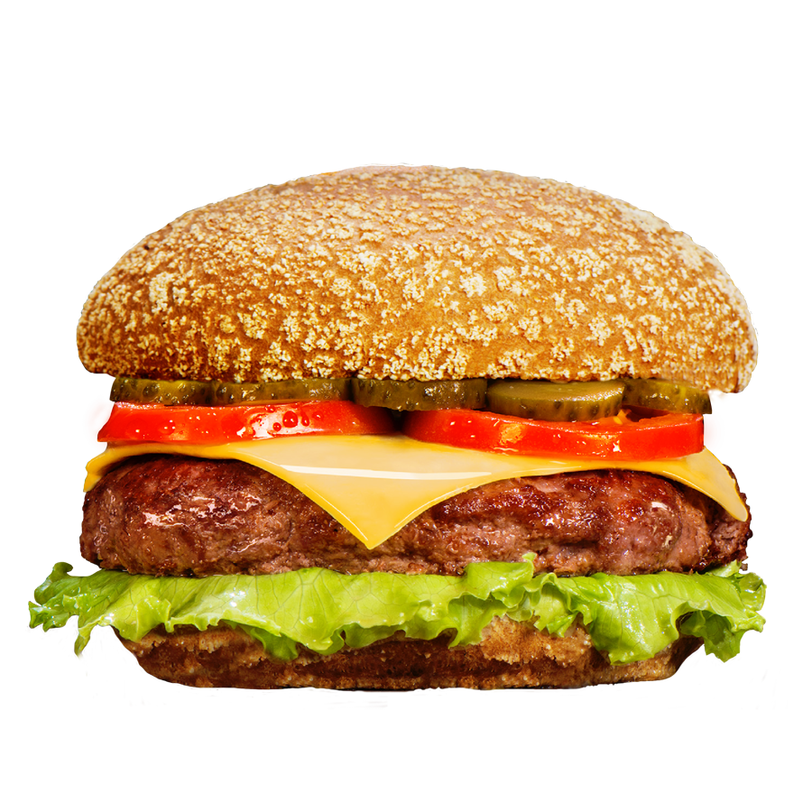
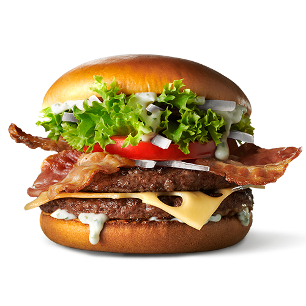
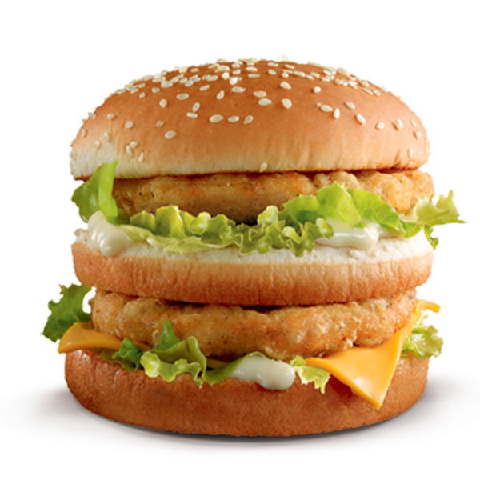

1
На первом этапе производства постное и жирное мясо перемалывают в однородный фарш и анализируют его температуру, жирность, содержание в нём влаги и белка.
На первом этапе производства постное и жирное мясо перемалывают в однородный фарш и анализируют его температуру, жирность, содержание в нём влаги и белка.
Второй этап — формовка котлет. Фаршу придают строго определённую форму, а затем замораживают получившиеся котлеты в скороморозильном тоннеле. В конце производственной линии установлен металлодетектор, через который проходят абсолютно все котлеты — и, если в какой-то из них обнаруживается малейшее содержание металла, она автоматически отбраковывается.
Готовые котлеты упаковывают и отправляют в морозильную камеру, где они дожидаются проверки микробиологических и органолептических показателей.
Только после подтверждения качества и безопасности котлеты отправляют в распределительный центр, который снабжает рестораны.
Обжарить котлеты на максимальном огне без масла. Подождать, пока они подрумянятся, и перевернуть. Приправить перцем и солью, подержать на огне ещё полминуты и сервировать.
Собрать бургер: нанести по столовой ложке соуса на heel и club, щедро присыпать сверху луком и салатом, положить кусочек сыра на heel и два колечка маринованного огурца на club, накрыть мясными котлетами и поставить части бургера одну на другую.


